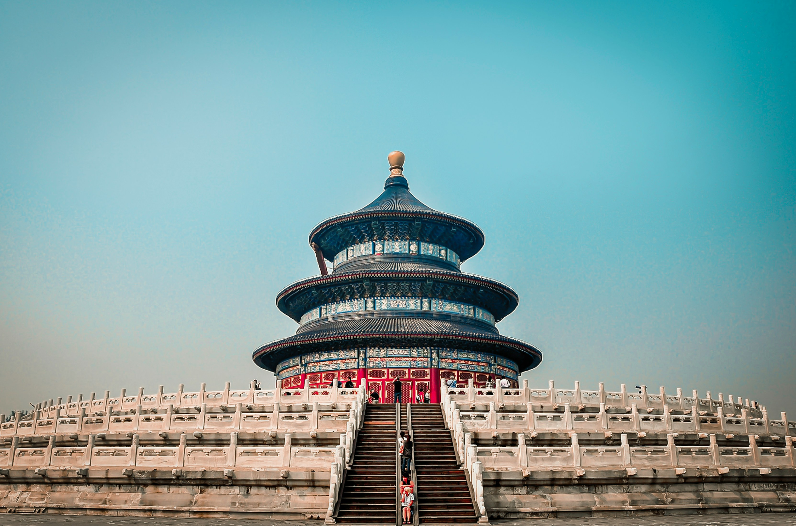
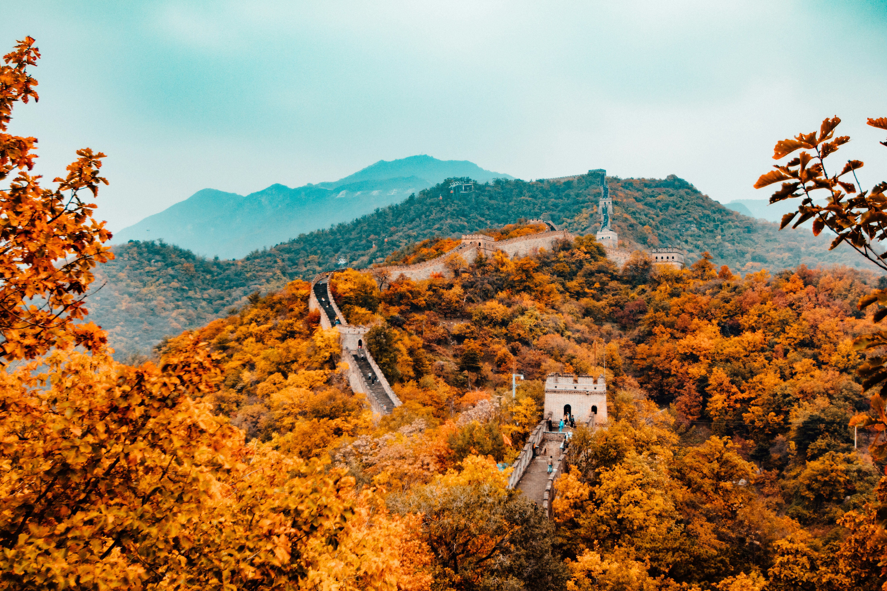
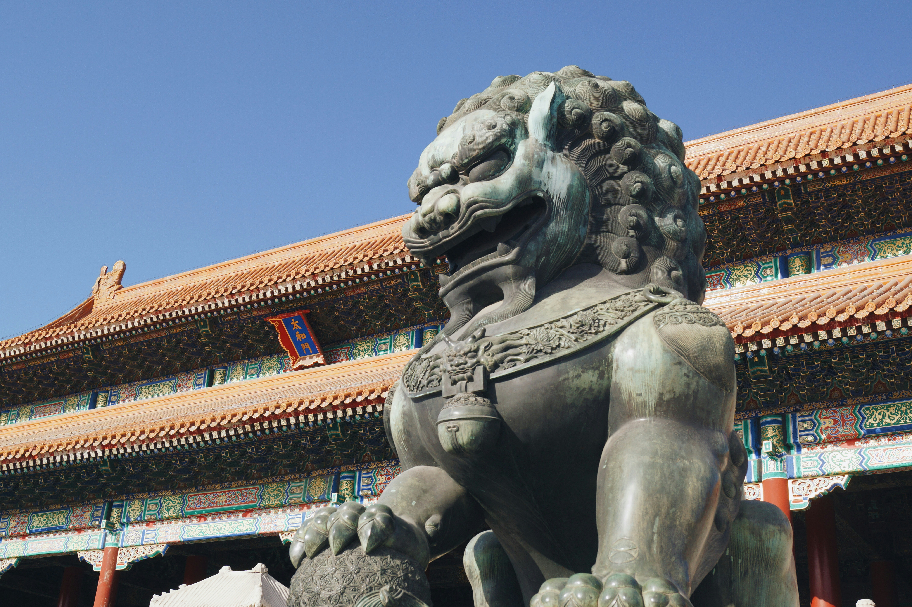
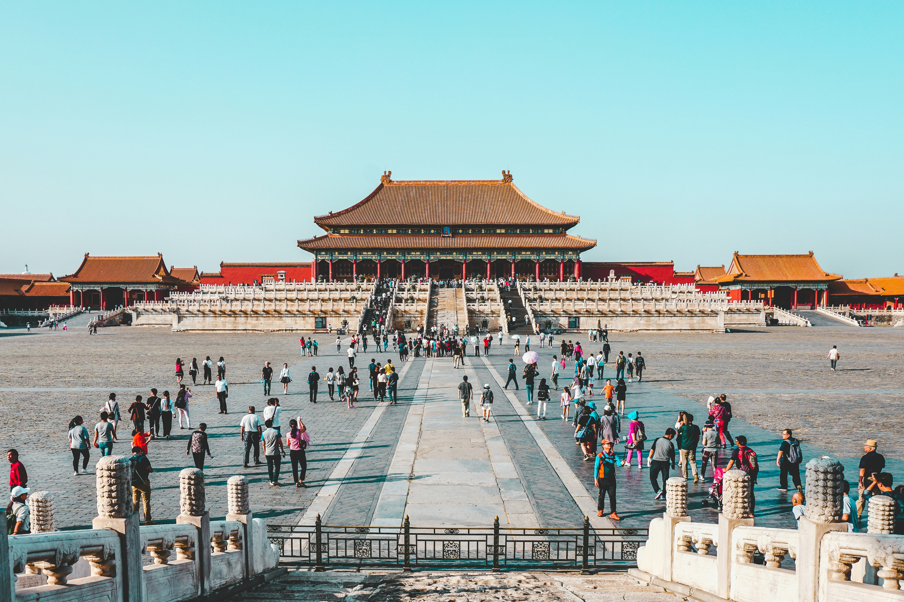

visit Beijing and enjoy the trip

The Great Wall of China stretches over 13,000 miles and represents one of humanity's most impressive architectural achievements, built over centuries to protect ancient Chinese empires. Several sections are accessible from Beijing, each offering unique experiences. Mutianyu features restored Ming Dynasty walls with cable car access and stunning mountain scenery, making it ideal for families and those seeking comfort alongside authenticity. The section includes 23 watchtowers and dramatic views especially beautiful during autumn foliage.
For adventurous travelers, Jinshanling and Simatai offer less crowded, partially restored sections where you can experience the wall's original rugged character. These sections require more hiking but reward you with authentic crumbling towers, steep climbs, and breathtaking vistas without tourist crowds. Some brave souls camp overnight on remote sections to watch sunrise over mountains. Bring water, wear comfortable hiking shoes, and start early to avoid midday heat. The wall's majesty is overwhelming in person - walking along ancient stones where soldiers once patrolled while viewing endless mountain ridges creates a profound connection to history spanning over 2,000 years.

The Forbidden City served as the imperial palace for 24 emperors during Ming and Qing dynasties, its name reflecting the fact that commoners were forbidden from entering for 500 years. This massive complex contains 980 buildings across 180 acres, making it the world's largest palace complex. Walking through the Meridian Gate into successive grand halls reveals increasingly intimate courtyards where emperors conducted state affairs, held ceremonies, and lived with their families and thousands of servants and concubines.
The architecture follows precise hierarchical symbolism, with yellow roof tiles (imperial color), intricate dragon carvings representing emperors, and phoenix motifs for empresses decorating every surface. The Palace Museum houses countless treasures including jade carvings, ancient paintings, ceremonial bronzes, and imperial robes. Visit early morning when gates open to beat crowds and appreciate the morning light on red walls and golden roofs. Audio guides or professional tours bring the palace to life with stories of intrigue, power struggles, and daily imperial life. Afterwards, climb Jingshan Park's hill directly behind the palace for panoramic views of the entire complex with Beijing's modern skyline beyond - a striking contrast of ancient and contemporary China.

Hutongs are Beijing's ancient narrow alleyways lined with traditional courtyard homes (siheyuan) that have existed for over 700 years, offering glimpses into old Beijing life before modern development. These maze-like neighborhoods around the Drum Tower, Gulou, and Nanluoguxiang areas reveal authentic local culture where residents still gather for morning tai chi, play mahjong under trees, and practice calligraphy in courtyards. Take a rickshaw tour or simply wander on foot, discovering hidden temples, family-run restaurants, and elderly residents who remember Beijing before skyscrapers.
Many hutongs now blend tradition with modernity - converted courtyard homes house trendy cafes, boutique hotels, craft beer bars, and art galleries while maintaining traditional architecture. Visit a local family's home to experience Chinese tea ceremony and learn about courtyard living arrangements where multiple generations shared space around central gardens. The best hutongs for exploring include Wudaoying Hutong for cafes and shops, Mao'er Hutong for mansion architecture, and Skewed Tobacco Pouch Street near Houhai Lakes. Evening brings magical atmosphere with red lanterns glowing and locals socializing outside. These neighborhoods face development pressure, making them precious remnants of disappearing traditional Beijing culture worth experiencing before they transform further.